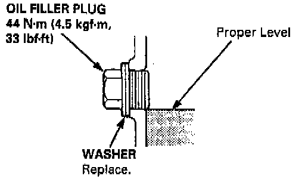
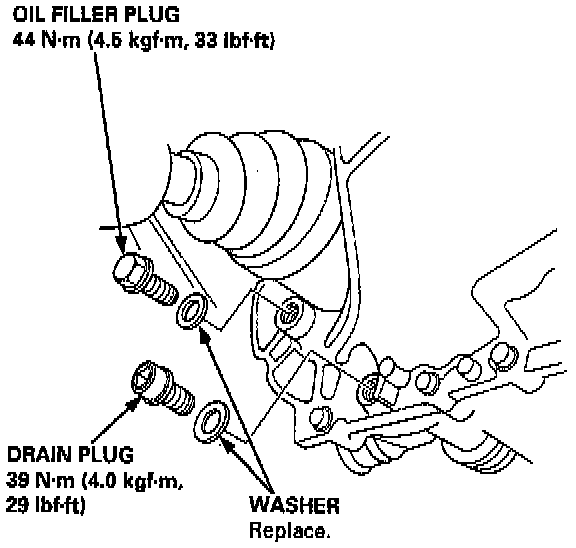

Fluid - M/T: Testing and Inspection
NOTE: Check the transmission oil with the engine OFF the car on level ground.
1. Remove the oil filler plug, then check the level and condition of the oil.
2. The oil level must be up to the filler hole. If it is below the hole, add oil until it runs out, then reinstall the oil filler plug.
3. If the transmission oil is dirty, remove the drain plug and drain the oil.
4. Reinstall the drain plug with a new washer, and refill the transmission oil to the proper level.
NOTE: The drain plug washer should be replaced at every oil change.

5. Reinstall the oil filler plug with a new washer.
- Oil Capacity:
2.2 l (2.3 US.qt) at oil change.
2.3 l (2.4 US.qt) at overhaul.
- Always use genuine Honda Manual Transmission Fluid (MTF). If it is not available, you may use an API service SG or SH grade motor oil with a viscosity of SAE 10 W-30 or 10 W-40 as a temporary replacement. Motor oil can cause increased transmission wear and higher shifting effort, so you should have the transmission drained and refilled with Honda MTF as soon as possible.